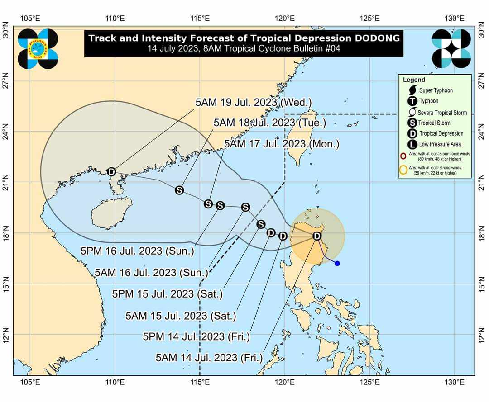

Latest Updates:
Nueva Vizcaya presents "Ammungan" Festival from May 19 to 24
Other shows are the Cultural and Indigenous Peoples Night which will showcase the unique culture and traditions of various tribes, Children’s Day,
where various games and child-friendly programs and activities will be offered, local beauties of the province will also be highlighted with the
conduct of the Search for Saniata ti Tribu Vizcayano at the provincial capitol, People’s Night with Orchestra with the participation of the 276
barangays of Nueva Vizcaya, Grand Parade and Float Competition and the Variety Show with Celebrities.
Other Updates: 1st Tour de Vizcaya attracts 105 riders.
